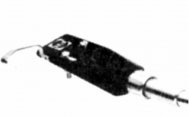
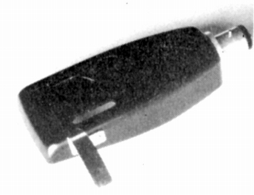
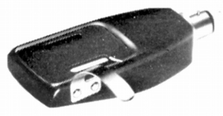
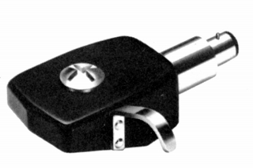
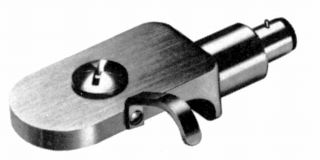
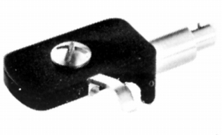
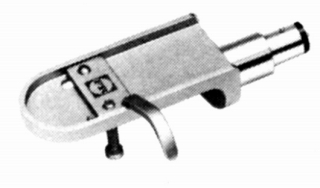
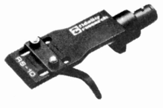
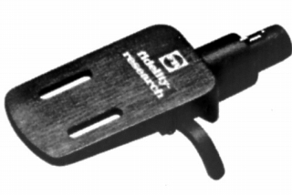
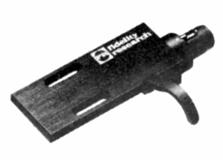

ヘッドシェル
FR-S/1

■価格 1,000円
■重量 7g
■備考 アルミプレス加工
価格は1973年頃のもの。
1975年頃は1,350円。
1977年頃は2,000円。
FR-S/2


■価格 1,300円
■重量 12g
■備考 アルミプレス加工
価格は1973年頃のもの。
1975年頃は1,600円。
1977年頃は2,000円。
FR-S/3

■価格 4,500円
■重量 19.7g
■備考 アルミプレス加工。FR-64Sの標準シェル。
FR-S/4

■価格 7,500円
■重量 14.6g
■備考 アルミブロック削り出し
FR-S/5

■価格 4,500円
■重量 18g
■備考 アルミプレス加工
オルトフォン取付台
■価格 1,050円
■備考 オルトフォンのSPUシリーズの本体を
FR-S/3,4,5に取り付ける為のスペーサー
価格は1979年頃のもの
1984年頃には\2,000
FR-S/6

■価格 2,900円
■重量 12g
■備考 アルミ削り出し
RS-10

■価格 3,300円
■重量 10g
■備考 シェル本体とスリーズの接合部は一体式。
RS-121

■価格 6,300円
■重量 12g
■備考 高剛性アルミインパクト高密度加工材
ロック板方式。FR-64fx、66fxの標準シェル。
RS-141

■価格 5,800円
■重量 14g
■備考 高剛性アルミインパクト高密度加工材
ロック板方式。